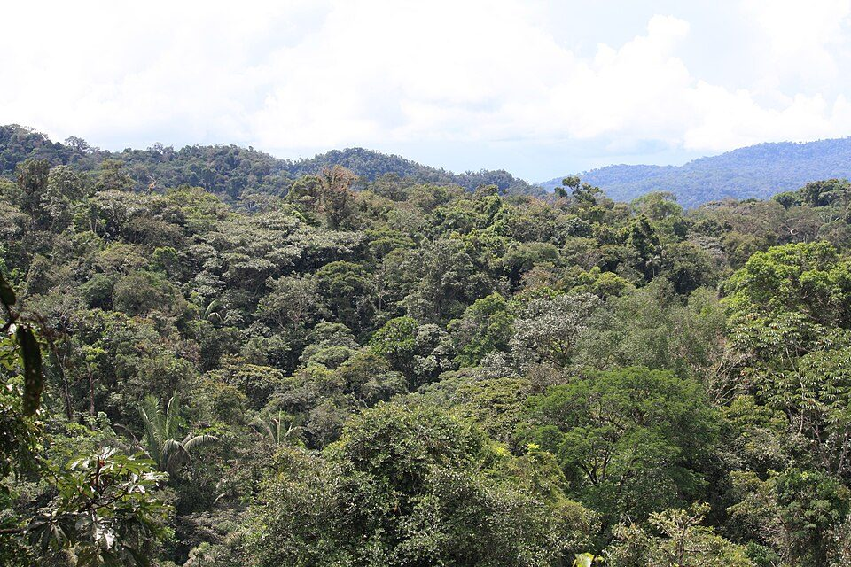

Bosques y selvas
Tres billones de árboles: la Amazonia, la taiga, las secuoyas gigantes y los bosques de España, de la dehesa a la laurisilva.


Los bosques cubren alrededor del 31 % de las tierras emergidas, unos 4.000 millones de hectáreas. Un estudio de 2015 calculó que en la Tierra hay unos 3 billones de árboles, unos 400 por persona. Son el hogar de la mayoría de las especies terrestres, regulan el agua y el clima y guardan enormes cantidades de carbono.
La Amazonia
La selva amazónica ocupa unos 5,5 millones de km², repartidos entre nueve países, sobre todo Brasil. Es la mayor selva tropical del mundo y alberga alrededor del 10 % de las especies conocidas. Sus árboles bombean tanta agua a la atmósfera que crean «ríos voladores» de humedad que riegan buena parte de Sudamérica.
Una selva tropical tiene pisos, como un edificio: el dosel, a 30-40 metros, recibe casi toda la luz y concentra la mayor parte de la vida; por encima sobresalen árboles gigantes, y en el suelo, sombrío, apenas llega un 2 % de la luz. Por eso muchas plantas, como las orquídeas y las bromelias, viven encaramadas a las ramas.
Los grandes tipos de bosque
- Selvas tropicales: calor y lluvia todo el año; máxima biodiversidad. Amazonia, Congo, Sudeste Asiático.
- Bosques templados: robles, hayas, castaños; pierden la hoja en otoño.
- Bosques mediterráneos: encinas, alcornoques y pinos adaptados a la sequía del verano y al fuego.
- Taiga o bosque boreal: la mayor masa forestal del planeta, de pinos, abetos y abedules, que cruza Canadá, Escandinavia y Siberia.
Árboles de récord
- El más alto: Hyperion, una secuoya roja de California de unos 116 metros. Su ubicación exacta es secreta para protegerlo.
- El más voluminoso: el General Sherman, una secuoya gigante de unos 1.500 m³.
- Uno de los más antiguos: Matusalén, un pino de las Montañas Blancas de California de unos 4.850 años. Algunos bosques clonales, como Pando, en Utah, podrían tener decenas de miles de años.


Los bosques de España
- La dehesa: un bosque aclarado de encinas y alcornoques, creado durante siglos por el ser humano para el ganado, que es uno de los paisajes más ricos en especies de Europa. De sus alcornoques sale buena parte del corcho del mundo.
- La selva de Irati, en Navarra, es uno de los mayores hayedos-abetales de Europa.
- La laurisilva del Parque Nacional de Garajonay, en La Gomera, es un bosque húmedo de laureles que cubría el sur de Europa hace millones de años y hoy solo sobrevive en la Macaronesia. Es Patrimonio de la Humanidad.
- El drago milenario de Icod de los Vinos, en Tenerife, es uno de los símbolos vegetales de las Canarias.
Aunque cueste creerlo, la superficie forestal de España ha crecido en las últimas décadas por el abandono del campo: hoy los bosques cubren más de un tercio del país. El reto es cuidarlos para prevenir los grandes incendios.
Bosques en peligro
Cada año se pierden millones de hectáreas de bosque tropical, sobre todo para pastos, soja y aceite de palma. La deforestación libera carbono, destruye hábitats y altera las lluvias. Desde 2023 el ritmo ha bajado en la Amazonia brasileña, pero los incendios de 2024 fueron de los peores registrados.
Vídeos para entenderlo mejor
- LA SELVA, UN ECOSISTEMA MUY VERDEHappy Learning Español · 412 mil visualizaciones
Los vídeos son de YouTube y de sus autores. Se cargan solo al pulsar sobre ellos. Ver todos los vídeos →